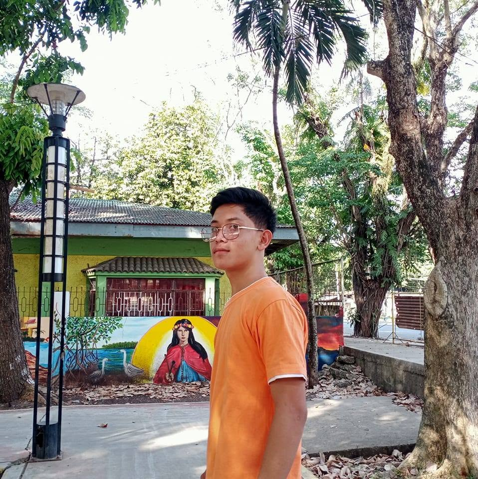

Web foundations
Building structured pages and responsive interfaces with a focus on clarity and usability.
BSIS STUDENT · ASPIRING WEB DEVELOPER
I'm Osbert Verdida — a curious Information Systems student who enjoys building useful, creative, and user-friendly digital experiences.
01 — THE PERSON BEHIND THE CODE

I'm Osbert B. Verdida, a Bachelor of Science in Information Systems student. I enjoy exploring how technology can solve everyday problems and make people's work easier.
From designing web interfaces to practicing programming and database concepts, every project gives me a chance to learn. I believe progress comes from patience, consistent practice, and the courage to try again.
02 — MY TOOLKIT
Tools and concepts I'm developing through coursework, practice, and personal projects.
Building structured pages and responsive interfaces with a focus on clarity and usability.
Practicing logic, problem-solving, and fundamental programming concepts.
Learning to organize, query, and work with information in structured systems.
Turning requirements into understandable layouts, documenting ideas, and improving through feedback.
Skills shown reflect current learning and practice — always growing, one project at a time.
03 — TRAINING ARC
Building a foundation in information technology, systems analysis, programming, databases, and technology in organizations.
Creating small web experiences and practicing programming tasks to turn classroom concepts into practical work.
Exploring better design, cleaner code, accessibility, and useful features while expanding my technical knowledge.
04 — SELECTED BUILDS
Academic and personal concepts I've worked on. Add live project links as your work goes online.
A registration interface concept with personal details, academic information, and student records.
A clean business presentation concept for a local water-refilling station, focused on clarity and trust.
A learning activity identifying HTML and CSS issues and recommending accessibility and maintainability improvements.
A themed digital greeting concept exploring visual storytelling, typography, and expressive web layouts.
05 — YOUR NEXT MOVE
Have an idea, a project, or an opportunity to learn together? I'd be glad to connect.
Send me an email ↗